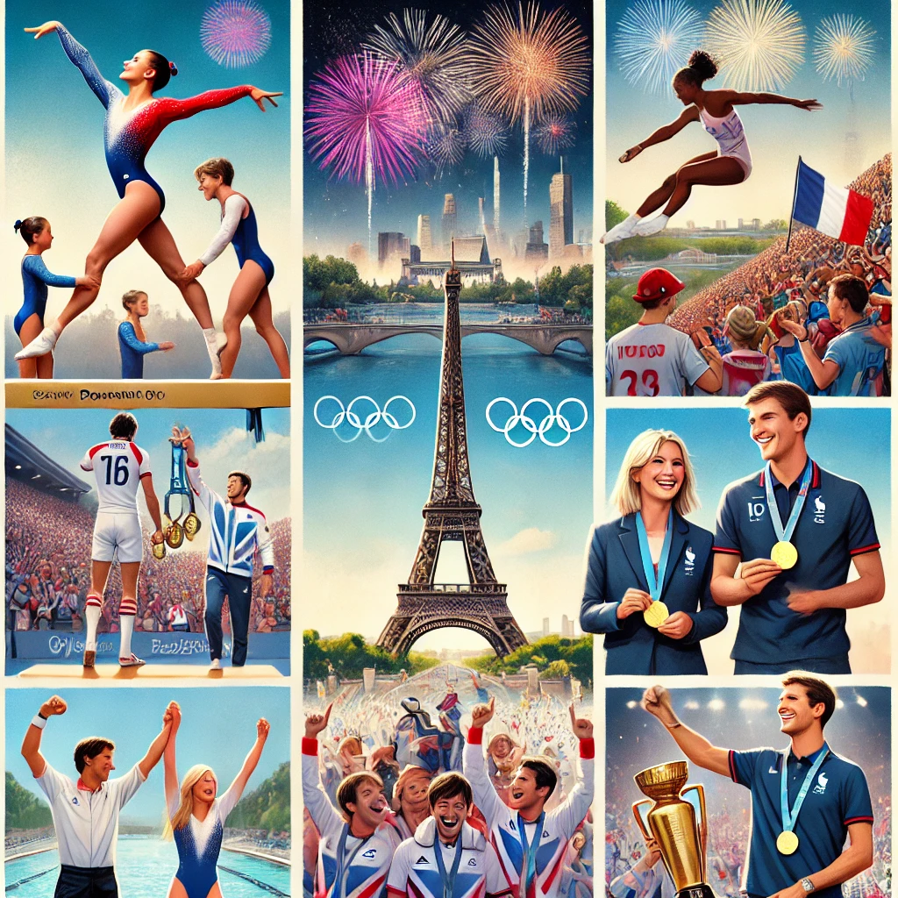

The Paris 2024 Summer Olympics, officially known as the Games of the XXXIII Olympiad, are set to be held in Paris, France from July 26 to August 11, 2024. Here's an overview with key points:
Key Points
The Paris 2024 Olympics aim to combine the rich history and culture of Paris with modern Olympic values and innovations, offering a memorable experience for athletes and spectators alike.
Key Points
- Dates and Duration:
- Opening Ceremony: July 26, 2024
- Closing Ceremony: August 11, 2024
- Duration: 17 days
- Venues:
- Main Venue: Stade de France, located in the suburb of Saint-Denis
- Paris City Venues: Events will be held across various iconic locations in Paris, including the Champ de Mars (for beach volleyball) and the Seine River (for swimming and triathlon)
- Additional Venues: Includes venues in other French cities like Marseille (sailing), Lyon (basketball), and Nice (road cycling).
- Sustainability:
- Green Games: Emphasis on sustainability, including the use of existing venues and the reduction of carbon emissions.
- Eco-Friendly Initiatives: Plans to achieve a carbon-neutral footprint and promote environmentally responsible practices.
- Sports and Events:
- New Sports: Breakdancing (breaking) will make its second appearance after debuting in Tokyo 2020. Other sports like surfing and skateboarding will also be featured.
- Traditional Sports: Includes athletics, swimming, gymnastics, and more.
- Cultural and Social Impact:
- Cultural Events: A range of cultural events and exhibitions will be organized throughout Paris to celebrate the Games and French culture.
- Community Engagement: Initiatives to involve local communities and foster engagement with the Olympics.
- Ticketing:
- Tickets: Available through official channels, with a range of pricing options to make events accessible to a broad audience.
- Legacy and Development:
- Infrastructure: Investments in infrastructure improvements and the development of sports facilities.
- Legacy Projects: Focus on creating long-term benefits for Paris and France, including enhanced sports facilities and urban development.
- Security and Logistics:
- Security Measures: Enhanced security protocols to ensure the safety of athletes, spectators, and the general public.
- Transport: Upgraded transportation options and planning to accommodate the influx of visitors.
The Paris 2024 Olympics aim to combine the rich history and culture of Paris with modern Olympic values and innovations, offering a memorable experience for athletes and spectators alike.
The top 10 countries in the 2024 Paris Olympics based on their medal count are:
- United States: 126 medals (40, 44, 42)
- China: 91 medals (40, 27, 24)
- Japan: 45 medals (20, 12, 13)
- Australia: 53 medals (18, 19, 16)
- France: 64 medals (16, 26, 22)
- Netherlands: 34 medals (15, 7, 12)
- Great Britain: 65 medals (14, 22, 29)
- South Korea: 32 medals (13, 9, 10)
- Italy: 40 medals (12, 13, 15)
- Germany: 33 medals (12, 13, 8)
The top 10 athletes with the most medals at the 2024 Paris Olympics are:
- Zhang Yufei (China) - 6 medals in swimming (4 golds, 2 silvers)
- Simone Biles (USA) - 5 medals in gymnastics (3 golds, 2 silvers)
- Leon Marchand (France) - 5 medals in swimming (4 golds, 1 bronze)
- Katie Ledecky (USA) - 4 medals in swimming (3 golds, 1 silver)
- Mollie O’Callaghan (Australia) - 4 medals in swimming (2 golds, 2 silvers)
- Emma McKeon (Australia) - 4 medals in swimming (2 golds, 2 bronzes)
- Caeleb Dressel (USA) - 4 medals in swimming (2 golds, 1 silver, 1 bronze)
- Ariarne Titmus (Australia) - 4 medals in swimming (1 gold, 2 silvers, 1 bronze)
- Torri Huske (USA) - 3 medals in swimming (2 silvers, 1 bronze)
- Kristof Milak (Hungary) - 3 medals in swimming (1 gold, 1 silver, 1 bronze)

Here is a collage showcasing 10 key moments from the 2024 Paris Olympics, featuring iconic scenes such as:
- Simone Biles performing on the balance beam.
- The opening ceremony with fireworks at the Eiffel
Tower. - French swimmer Léon Marchand celebrating his
gold medal. - he French rugby sevens team celebrating their
victory. - Zhang Yufei holding her multiple medals.
- Katie Ledecky smiling with her gold medal.
- A skateboarding event in the urban park.
- Mollie O'Callaghan racing in the pool.
- Novak Djokovic celebrating his tennis gold.
- A breakdancing event with enthusiastic crowds.